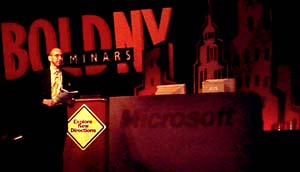

|
| ||
|
| ||
Handan Selamoglu
Editorial Manager
Microsoft Corporation
April 24, 1997
The following article was originally published in the MSDN Online Voices.
On the plane this week from Seattle to New York, where the Seybold Seminars Spring 1997 conference was held this year, I read an interesting article about chaotic clustering theory and how it might help Hollywood better understand moviegoers.
Albert Einstein and Satyendra Nath Bose used this theory in the 1920s to explain the behavior of gas molecules bouncing around a room -- the molecules always clustered somewhere, although their position could not be predicted. A day after reading of them, I felt like one of Einstein's molecules as I flitted, with thousands of other Seybold attendees -- pausing for information here on a multimedia-publishing tool, there on an SGML converter, and elsewhere for a Java scripting demo. All this in a huge exhibit hall gleaming with what one speaker described as "primordial electronic ooze."

Colorful duo. MSDN Online Voices columnist Nadja Vol Ochs (left) and author Lynda Weinman talk browser-safe palettes
Hundreds of us congregated on Thursday for Microsoft's Web Design Seminar, subtitled "Explore New Directions." (Interestingly, a show of hands indicated that over half the audience of more than 500 had registered for Seybold just to attend Microsoft's one-day seminar.)
Tod Nielsen, general manager of Microsoft's Developer Relations Group, kicked off the seminar with a top-ten list of thoughts on security.
"I would rather give a presentation to a group of influentials in the publishing community who really like the Mac and are not very fond of Windows than be the spokesperson for security," he deadpanned -- to enthusiastic applause.
Nielsen gave a brief overview of key trends in the publishing industry ("print is not going away"), touched on Microsoft technologies and partnerships that would help the industry take advantage of the Web, and emphasized how team-based interactive content development is bringing together people with diverse skill sets -- HTML authors, designers, scripters, programmers.
Ken Ong, a group program manager for Microsoft's Internet Explorer browser, discussed dynamic HTML, channels, and Webcasting capabilities in Internet Explorer version 4.0. We saw demos of automated information delivery and special effects with dynamic HTML, and how they can make it easier to design sites that can rise above the noise level of the Web.
An expert panel of type engineers and designers provided an intriguing overview of how plain, old text can successfully compete with pulsating icons, blinking graphics, and other design monstrosities that often masquerade as design on the Web.
Matthew Carter, a type designer at Carter and Cone,
explained "hinting," "anti-aliasing," and other considerations in
the design of the type fonts Verdana and Georgia for the Web.
Sharon Wienbar, director of product marketing at Adobe Systems,
Inc., discussed this week's Adobe-Microsoft joint announcement of a
new OpenType spec,  which unifies Type 1
and TrueType, allowing designers to use the same font across
different media. It adds international support, accurate placement
of accents, ligature substitution, small caps, fractions, WebDings,
and a ton of other nice features designers have patiently awaited.
It also supports font embedding (available with a forthcoming beta
edition of Internet Explorer 4.0), thus allowing designers to ship
fonts with their Web pages, instead of relying on the lowest common
denominator fonts available on users' systems.
which unifies Type 1
and TrueType, allowing designers to use the same font across
different media. It adds international support, accurate placement
of accents, ligature substitution, small caps, fractions, WebDings,
and a ton of other nice features designers have patiently awaited.
It also supports font embedding (available with a forthcoming beta
edition of Internet Explorer 4.0), thus allowing designers to ship
fonts with their Web pages, instead of relying on the lowest common
denominator fonts available on users' systems.
Simon Earnshaw and Bill Hill from Microsoft's Typography group predicted that online publishing would grow rapidly but would not replace print, and emphasized the importance of collaboration, such as that between Adobe and Microsoft, in addressing the Web's current typographic limitations.
Lynda Weinman, a noted designer and author of popular books on Web graphics, and Nadja Vol Ochs, an interactive media designer at Microsoft, discussed color on the Web. Weinman educated us on color palettes, RGB values, dithering, and Macintosh-versus-PC considerations. She advised us to use the 216 shared colors -- the browser-safe palette -- when doing cross-platform design, and hex codes when designing illustrations with solid colors. For photographs, she said, stick to the 24-bit or adaptive palette.
The discussion took a decidedly technical turn when Microsoft's Tal Saraf spoke on Microsoft Internet Information Server and Active Server Pages (ASP), a technology that takes advantage of HTML, scripting, and controls to help build dynamic content. Saraf recalled how the first home page on MSN, the Microsoft Network, took four months of writing non-reusable C++ code. The page was, he reported, replaced recently by a new home page that takes advantage of ASP and required only one week of script writing. Adam Heneghan of Giant Step Productions showed compelling examples of ASP solutions his firm has delivered for Hallmark, McDonald's, and other companies.
David Siegel -- the widely quoted author, designer, longtime Macintosh user, and creator of the popular Tekton typeface -- presided over a session titled "Killer Web Sites." A show of hands sought by Siegel revealed more PC users than Mac users in the audience, and an even higher percentage of folks using -- and authoring for -- both platforms. Siegel recounted how his PC machine slowly crept from a corner of his desk to center stage. The session focused on how designers and authors grapple with cross-platform challenges.

Killer confession. Author David Siegel cops a plea to having perpetrated some killer Web sites.
So for a day at least, it all sort of made sense. We were reassured that the Web wasn't taking over traditional, print-based publications, but actually improved our abilities -- as designers, authors, and editors -- to communicate effectively. We learned about new technologies that extend HTML, new partnerships between leading companies in the development and design industries, and how the Web fostered better relationships with our audiences, our colleagues, and all the other "molecules" in the industry. Leaving the conference room, we dispersed and went back to our unpredictably clustering ways.
When not serving as a far-flung correspondent for MSDN Online Voices, and occasionally shuffling a few files for the MSDN Online Web Workshop, Handan Selamoglu tends to her Washington State agri-business.
Did you find this material useful? Gripes? Compliments? Suggestions for other articles? Write us!
© 1999 Microsoft Corporation. All rights reserved. Terms of use.